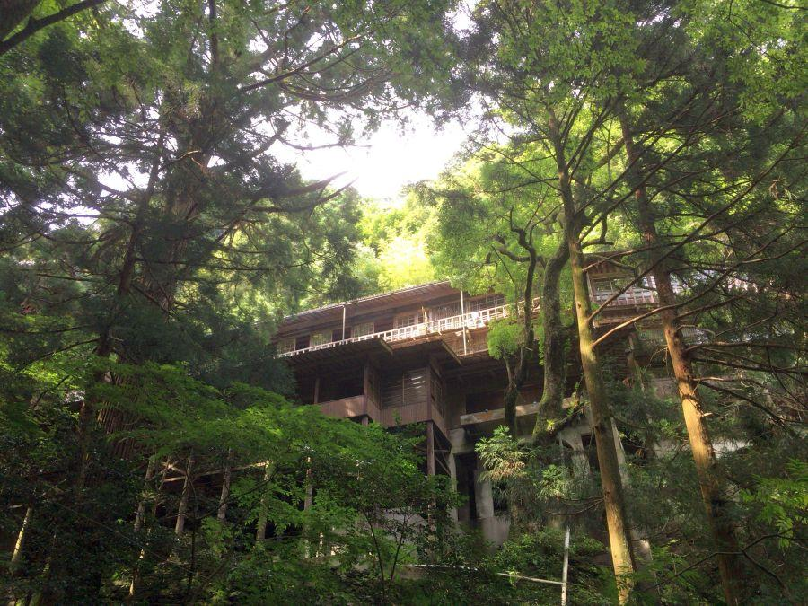
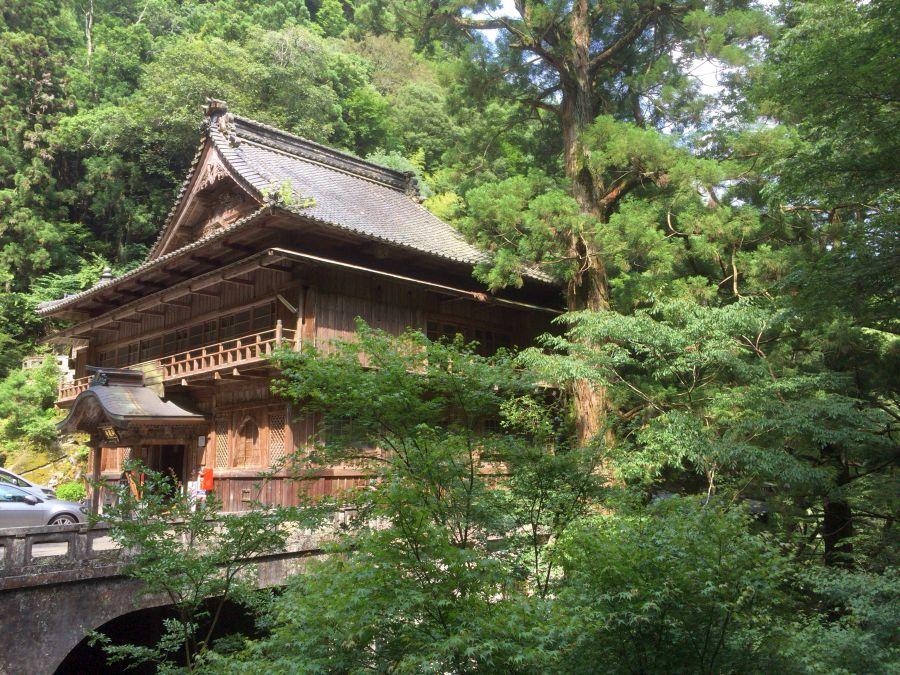
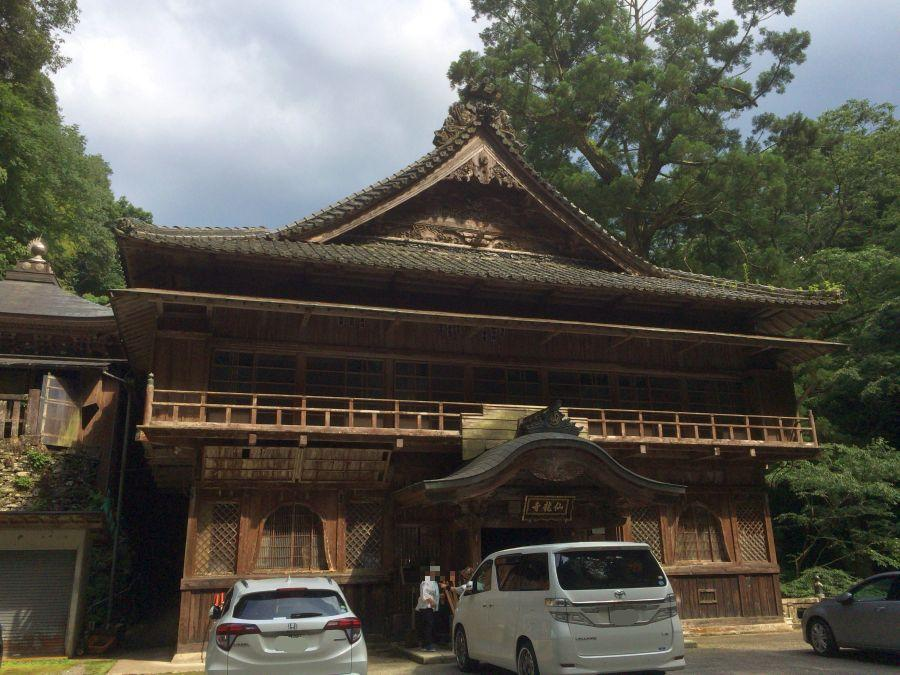
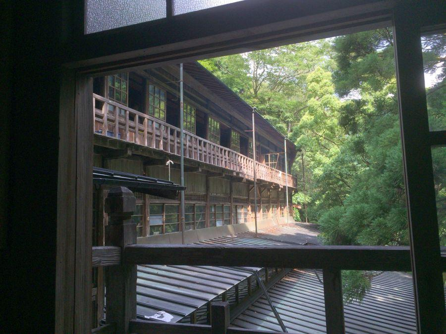
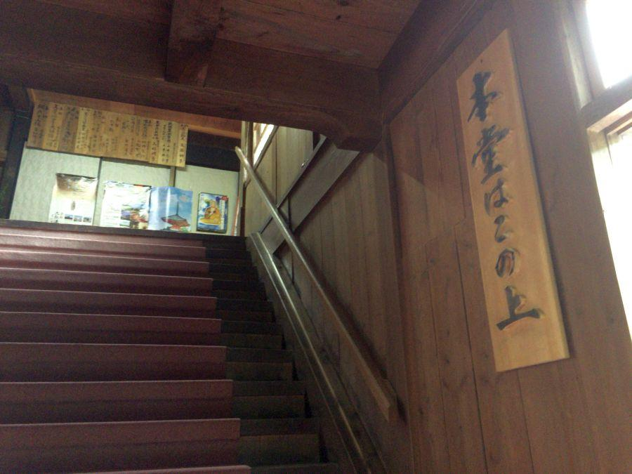
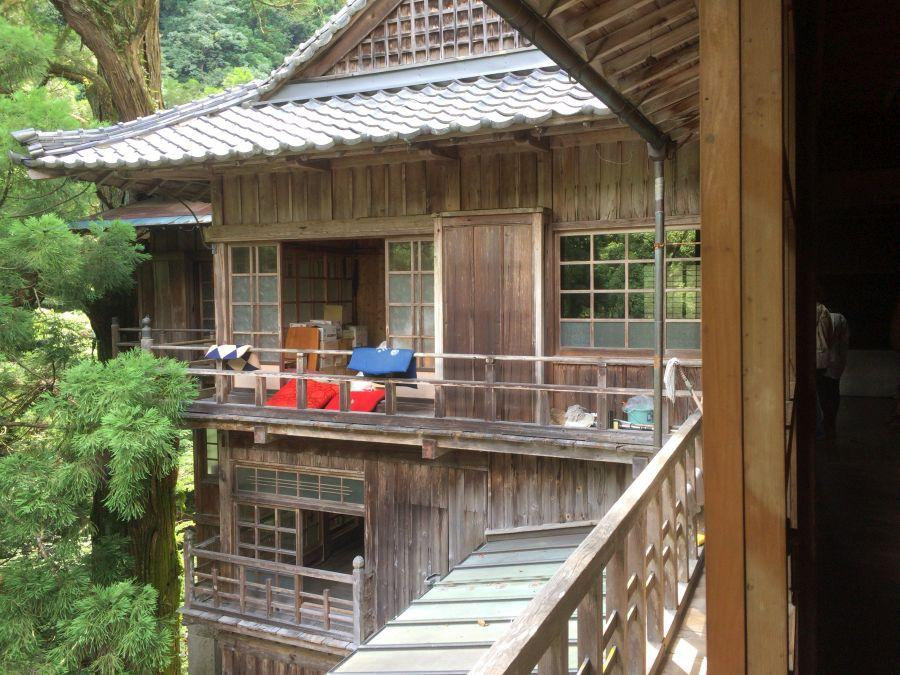
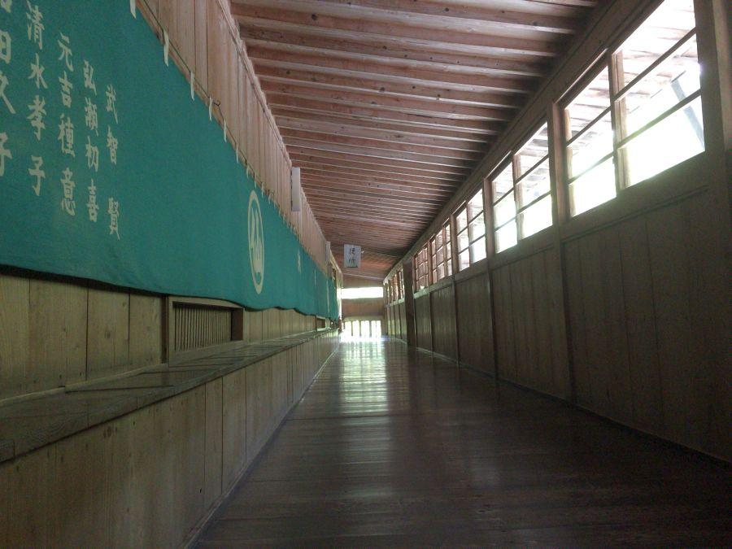
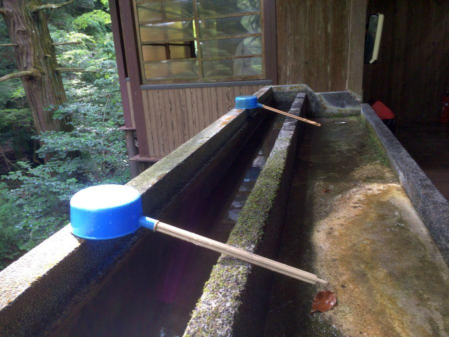
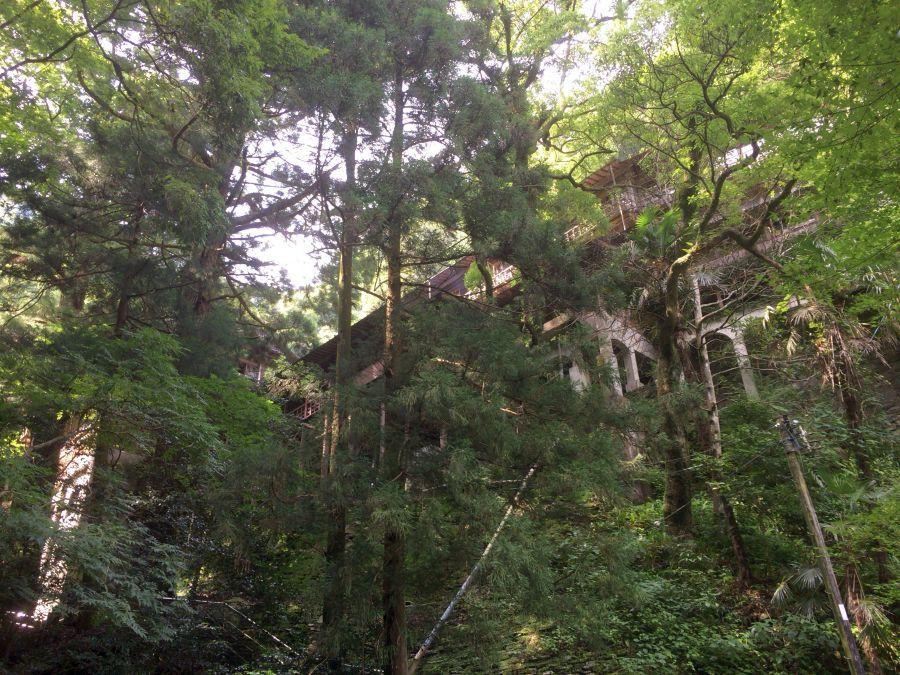

寺というより古旅館の佇まい < 奥の院仙龍寺 / 愛媛県 >

山の奥に突如姿を現す巨大な木造建造物。
一見 古旅館のような佇まい。地元では "奥の院" と呼ばれ親しまれているお寺です。
奥の院・仙龍寺

入口前は橋になっていて、下には更に奥から流れ出る山水が流れています。
現在の建物は 昭和9年(1934)の竣工。土台にはコンクリートが用いられており、昭和激動の時代に これほど大量の資材と職人を よく手配できたなあ、と思います。

仙龍寺(愛媛県四国中央市)
土台を除いて 建屋は木造です。やはり寺と言うよりは 旅籠(はたご)に見える。
それもそのはず、仙龍寺は宿坊として発達した歴史があります。
参籠所として発達した理由

仙龍寺は四国八十八ヶ所・第65番三角寺(さんかくじ)の奥の院 にあたります。
この場所は愛媛県最東部にあたり、香川・徳島県との県境に近いエリア。次の66番札所雲辺寺(うんぺんじ)は讃岐國の一番札所となります(＝香川県で一番初めの札所)。
四国八十八ヶ所を開いた 弘法大師(空海)ゆかりの場所を訪ねて参拝を行うことが 四国八十八ヶ所参り・四国遍路の原型ですが、そういった意味ではここは伊豫國(いよのくに・愛媛県)で最後に大師が祀られていた場所。
かつての四国遍路にとって 外せる場所ではないため、65番三角寺をお参りした後は 更に山を越えてこの場所を目指しました。
が、日帰りで行って帰ることができるほど 近くは無い。
行って戻ろうとすると 日が暮れてしまう。そこで参詣者(＝遍路)が宿泊できるように宿坊が発達したわけです。
増築・改築を繰り返し 現在の規模になったのは 戦前の事。
春夏秋冬毎日大賑わいというわけではないでしょうが、その時代でも これだけの宿泊需要があった事は、四国八十八ヶ所の認知度の高さか 信仰の力と言うべきか。この山奥で驚かされます。
寺院内部は...

弘法大師が祀られる本堂は上階。お遍路さんが訪れ 参拝していきます。

上階の窓から外を眺めてみると、低い木製手すりに座布団が干されていました。これが布団だと まるで古旅館。

下階のお手洗いへ続く廊下

お手洗いの水道は 山から流れ出た水が引かれていて、それを柄杓で掬って手を洗う方式。
また、ここから見下ろす眺めも なかなか良い。
ある有名アニメ映画のモデルになった噂

お遍路さんの参拝スタイルの変化によって この場所を訪れる参詣者は減り、自家用車の普及によって 日帰りが可能になったため、宿泊する必要性は薄れてしまいました。残念ながら現在は宿泊業務は停止されています。
これほどの施設の大半が今はもう使われていないことを考えると、非常に惜しい気持ちになります。築年数を考えると いつかは必ず建物としての寿命がきてしまうわけですが、山奥に残された古建築として。かつての四国遍路を彷彿させる場所として、末永く現在の形のままであって欲しいと願うばかりです。
ちなみに 映画「千と千尋の神隠し」で主人公が暮らす湯屋(ゆや)。そのモデルの一つに、仙龍寺の佇まいが参考にされたという噂があります。
< 自家用車 >
高松駅から 約1時間30分、91km
高松空港から 約1時間30分、91km
※ 主な地点からの最速・最短距離